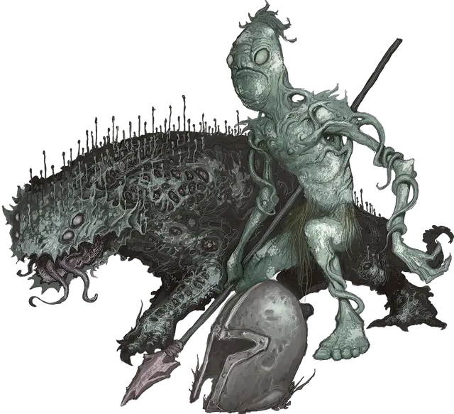

Вегепигмей вождь
Vegepygmy Chief
Маленькое Растение, обычно нейтральное

Класс Доспеха 14 (природный доспех)
Хиты 33 (6к6 + 12)
Скорость 30 футов
| мод | спас | ||
|---|---|---|---|
| СИЛ | 14 | +2 | +2 |
| ЛОВ | 14 | +2 | +2 |
| ТЕЛ | 14 | +2 | +2 |
| мод | спас | ||
|---|---|---|---|
| ИНТ | 7 | −2 | −2 |
| МДР | 12 | +1 | +1 |
| ХАР | 9 | −1 | −1 |
Навыки Восприятие +3, Скрытность +4
Сопротивление урону электричество; колющий
Чувства тёмное зрение 60 футов, пассивное Восприятие 13
Языки Язык Вегепигмеев
Опасность 2 (450 опыта)
Бонус мастерства +2
Среда обитания Болото, Лес
Особенности
Растительный камуфляж. . Вегепигмей имеет преимущество на проверки Ловкости (Скрытность), которые он совершает в любой местности, достаточно укрытой растительностью.
Регенерация. . Вегепигмей восстанавливает 5 хитов в начале своего хода. Если он получает урон холодом, огнём или урон некротической энергией, то эта особенность не работает в начале следующего хода вегепигмея. Он умирает только если начинает ход с 0 хитов и не может регенерировать.
Действия
Мультиатака. Вегепигмей совершает две атаки Когтями или две рукопашные атаки Копьем.
Когти. . Рукопашная атака оружием: +4 к попаданию, досягаемость 5 футов, одна цель. Попадание: 5 (1к6 + 2) рубящего урона.
Копьё. . Рукопашная или Дальнобойная атака оружием: +4 к попаданию, досягаемость 5 футов или дистанция 20/60 футов, одна цель. Попадание: 5 (1к6 + 2) колющего урона или 6 (1к8 + 2) колющего урона при использовании двумя руками для рукопашной атаки.
Споры (1/день). . Облако токсичных спор радиусом 15 футов испускается из вегепигмея. Споры огибают углы. Каждое существо в этой области, которое не является Растением, должно преуспеть в спасброске Телосложения Сл 12, иначе станет отравленным. Отравленная таким образом цель получает 9 (2к8) урона ядом в начале каждого своего хода. Цель может повторять спасбросок в конце каждого своего хода, окончивая этот эффект на себе при успехе.
Описание
Пока вегепигмей стареет, он становится мощнее и развивает области спор на своем теле. Другие вегепигмеи подчиняются этим, так называемым вождям. Вождь может испустить свои споры облаком, и заразить ближайших существ. Если существо умирает, будучи зараженным, то его тело производит вегепигмея так же как и красно–коричневая плесень.
Вегепигмеи
Вегепигмеи – грибные существа, живущие примитивными племенными сообществами, охотясь за пищей и распространяя споры, которыми они размножаются. Вегепигмеи, также называемые плесневый народец или плесневики, населяют темные области, в которых тепло и влажно, так что чаще всего их можно встретить под землей или в плотных лесах, которые не пропускают солнечный свет. Вегепигмей инстинктивно чувствует родство с другими растениями и грибами, поэтому их племена хорошо сосуществуют с такими существами как взрослый миконид [myconid adult], визгун [shrieker] и лиловый гриб [violet fungus].
Хоть они и предпочитают есть свежее мясо, кости и кровь, вегепигмеи также могут поглощать питательные вещества из почвы и многих видов органической материи, что означает, что они редко бывают голодны. Вегепигмеи могут шипеть и издавать другие звуки, пропуская воздух через рот, но они не разговаривают в обычном смысле. Друг с другом вегепигмеи общаются свистом, жестами и ритмичными постукиваниями по телу. Вегепигмеи мало что изготавливают и строят; все снаряжение они берут у других существ или строят копии простых зданий, которые видели.
Красно–коричневая плесень
Гриб, известный как красно–коричневая плесень, обладает следующей из названия расцветкой и произрастает только в темных, теплых и сырых местах. Красно–коричневую плесень, которая распространяется по металлическим объектам легко перепутать с естественной ржавчиной, и нужно успешно пройти проверку Интеллекта (Природа) или Мудрости (Выживание) Сл 15, чтобы точно определить ее на вид в таком случае.
Любое существо, находящееся в 5 футах от красно– коричневой плесени должно пройти спасбросок Телосложения Сл 13, когда плесень испускает облако спор. При провале существо становится отравленным. Будучи отравленным таким образом, существо получает 7 (2к6) урона ядом в начале каждого своего хода, и зарастает плесенью при получении этого урона. Существо может повторять спасбросок в конце каждого своего хода, закончив эффект при успехе. Любая магия, которая нейтрализует яд или излечивает болезнь, убивает заражение. Любое существо, чьи хиты падают до 0 от яда плесени, умирает. Если погибшее существо – зверь, гигант или гуманоид, то один или несколько новорожденных вегепигмеев появляется из его тела 24 часа спустя: один новорожденный из Маленького тела, два из Среднего, четыре из Большого, восемь из Огромного или шестнадцать из Громадного.
Красно–коричневую плесень трудно убить, так как оружие и большинство типов урона не причиняют ей вреда. Эффекты, которые наносят урон кислотой, некромантией или лучевой урон убивают 1 квадратный фут красно–коричневой плесени за каждый 1 урона. Фунт соли, галлон алкоголя или магический эффект, который излечивает болезни, убивает красно–коричневую плесень в квадратной области со стороной 10 футов. Солнечный свет убивает любую красно–коричневую плесень, которая находится в области света.